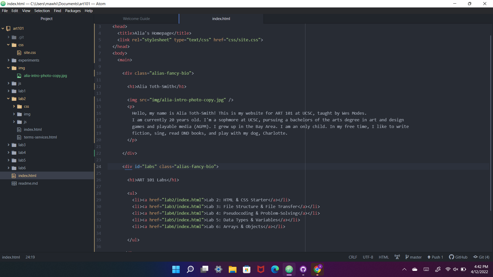
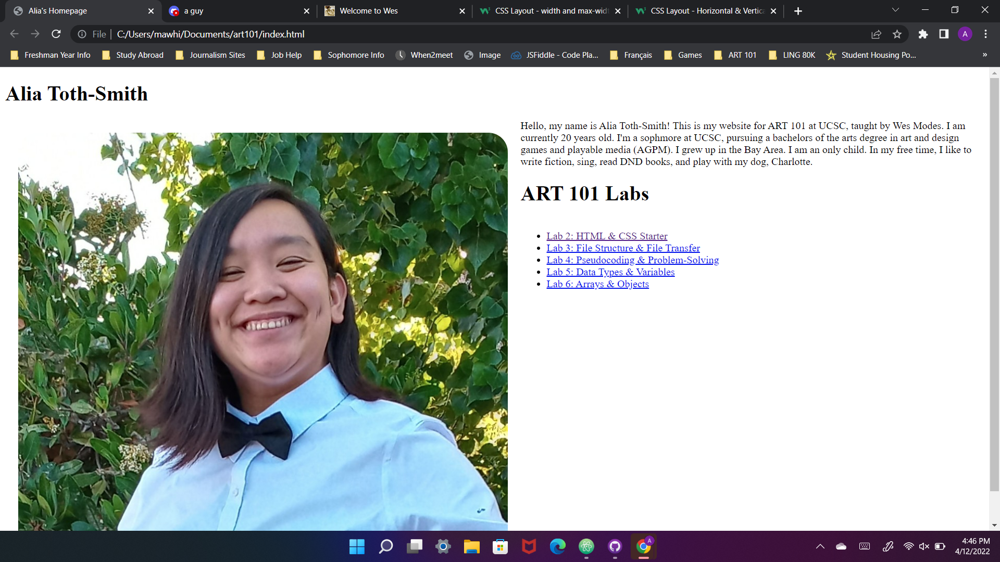
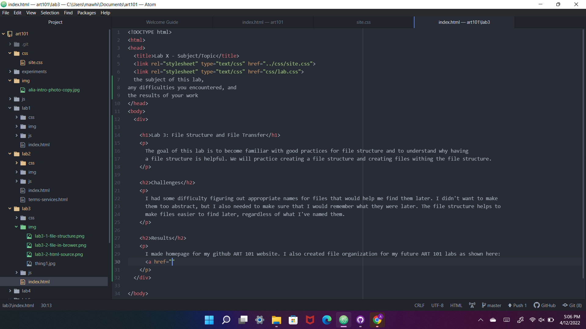
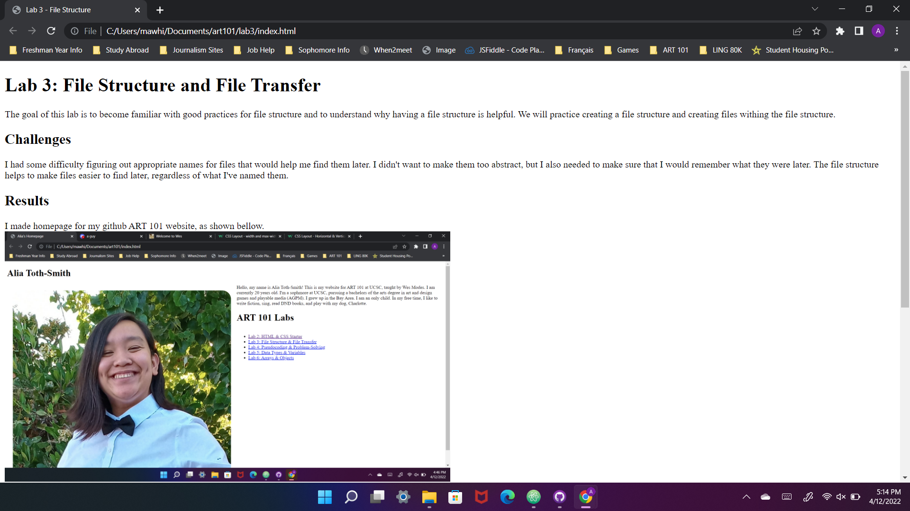

The goal of this lab is to become familiar with good practices for file structure and to understand why having a file structure is helpful. We will practice creating a file structure and creating files withing the file structure.
I had some difficulty figuring out appropriate names for files that would help me find them later. I didn't want to make them too abstract, but I also needed to make sure that I would remember what they were later. The file structure helps to make files easier to find later, regardless of what I've named them.
Screenshot of my file structure

Screenshot of the html for my front page

Screenshot of the my file locally in browser

Screenshot of the partial html for this page before adding CSS

Screenshot of the top of this page in browser before adding CSS